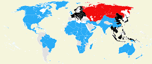
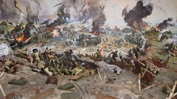
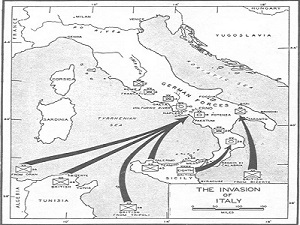
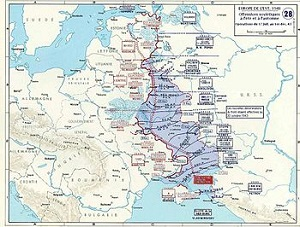

După Campania Guadalcanal, Aliații au inițiat mai multe operațiuni împotriva Japoniei în Pacific. În mai 1943, forțe canadiene și americane au fost trimise pentru a elimina forțele Japoneze din Insulele Aleutine. Curând după aceea, cu sprijin din partea forțelor australiene și neozeelandeze, SUA a început operațiuni majore pentru a izola Rabaulul prin cucerirea insulelor din jur, și penetrarea perimetrului japonez din Pacificul Central în Insulele Gilbert și Marshall. Până la sfârșitul lunii martie 1944, Aliații au realizat ambele obiective, și au și neutralizat marea bază japoneză de la Truk din Insulele Caroline. În aprilie, Aliații au lansat o operațiune de recucerire a vestului Noii Guinei. În Uniunea Sovietică, și germanii și sovieticii au petrecut primăvara și începutul verii anului 1943 pregătindu-se de mari ofensive în Rusia centrală. La 4 iulie 1943, Germania a atacat forțele sovietice în jurul ieșindului Kursk. Într-o săptămână, forțele germane s-au epuizat împotriva fortificațiilor sovietice profund structurate și foarte bine construite și, pentru prima dată în război, Hitler a anulat operațiunea înainte ca aceasta să își îndeplinească obiectivele tactice sau operaționale. Această decizie a fost parțial afectată de invazia Siciliei de către Aliații occidentali, lansată la 9 iulie, care, combinată cu eșecurile italiene anterioare, au dus la înlăturarea și arestarea lui Mussolini mai târziu în acea lună. În iulie 1943, britanicii au incendiat Hamburgul ucigând peste 40.000 de oameni.
Armata roșie, în timpul Bătăliei de la Kursk, cea mai mare bătălie cisternă s-a luptat vreodată. La 12 iulie 1943, sovieticii au lansat propria lor contraofensivă, risipind astfel orice șansă de victorie germană sau chiar impas în est. Victoria sovietică de la Kursk a marcat sfârșitul superiorității germane, oferind Uniunii Sovietice inițiativa pe Frontul de Est. Germanii au încercat să-și stabilizeze frontul de est de-a lungul liniei Panther-Wotan fortificate în grabă, dar sovieticii au penetrat-o la Smolensk și prin Ofensiva Niprului Inferior.
La 3 septembrie 1943, Aliații au invadat Italia continentală, după care Italia a semnat armistițiul cu Aliații. Germania a răspuns prin dezarmarea forțelor italiene, preluând controlul militar asupra unor zone din Italia, și de creând o serie de linii defensive. Forțele speciale germane l-au salvat apoi pe Mussolini, care curând a proclamat un nou stat-clientelar în Italia sub ocupație germană, numit Republica Socială Italiană, provocând un Război Civil Italian. Aliații Occidentali au luptat prin mai multe linii până la atingerea principalei linii defensive germane la mijlocul lunii noiembrie.
Operațiunile germane din Atlantic au avut și ele de suferit. În mai 1943, după ce contramăsurile Aliaților au devenit efective, având ca rezultat considerabile pierderi de submarine germane, campania navală din Atlantic a germanilor a trebuit să fie suspendată. În noiembrie 1943, Franklin D. Roosevelt și Winston Churchill s-a întâlnit cu Chiang Kai-shek la Cairo și apoi cu Iosif Stalin la Teheran. Prima conferință a hotărât retrocedarea postbelică a teritoriului japonez și a facilitat planificarea militară a Campaniei din Birmania; cea de a doua a cuprins acordul că Aliații Occidentali vor invada Europa în 1944 și că Uniunea Sovietică va declara război Japoniei în termen de trei luni de la înfrângerea Germaniei.
Ofensiva Sovietică ce a urmat a fost oprită la frontiera antebelică a Estoniei de Grupul de Armate Nord german sprijinit de estoni în speranța de restabilirii independenței naționale. Această întârziere a încetinit operațiunile sovietice ulterioare din regiunea Mării Baltice.Către sfârșitul lunii mai 1944, sovieticii au eliberat Crimeea, au îndepărtat în mare măsură armatele Axei din Ucraina, și au făcut incursiuni în România, care au fost respinse de trupele Axei. Ofensiva Aliaților din Italia a reușit și, cu costul permiterii retragerii mai multor divizii germane, pe 4 iunie, a cucerit Roma.
Din noiembrie 1943, din timpul celor șapte săptămâni ai bătăliei de la Changde, Chinezii au forțat Japonia să ducă un costisitor război de uzură, așteptând sprijin aliat.În ianuarie 1944, Aliații au lansat o serie de atacuri în Italia împotriva liniei de la Monte Cassino și a încercat să-l înconjoare prin debarcările de la Anzio. Până la sfârșitul lunii ianuarie, o mare ofensivă sovietică a îndepărtat trupele germane din regiunea Leningrad, încheind cel mai lung și cel mai mortal asediu din istorie.
Aliații au avut succese în Asia continentală. În martie 1944, Japonezii au lansat prima din cele două invazii, o operațiune împotriva pozițiilor britanice de la Assam, India și în curând au asediat pozițiile Commonwealth-ului la Imphal și Kohima. În mai 1944, forțele britanice au organizat o contraofensivă, care a împins trupele japoneze înapoi în Birmania,iar forțele Chineze care invadaseră nordul Birmaniei la sfârșitul anului 1943 au asediat trupele japoneze în Myitkyina. A doua invazie japoneză a Chinei avea ca scop distrugerea principalelor forțe de luptă ale Chinei, asigurarea căilor ferate între teritoriile ocupate de japonezi și capturarea aerodromurilor aliate. Până în luna iunie, japonezii au cucerit provincia Henan și au început un nou atac asupra Changshaului în provincia Hunan.



